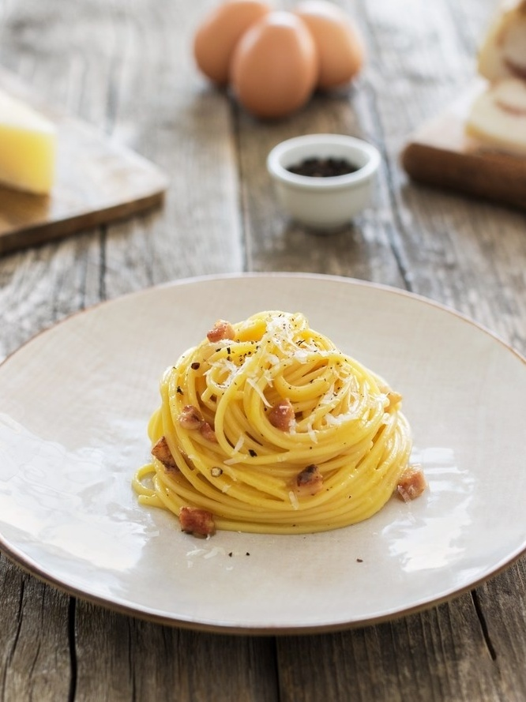

Carbonara
Home Page

Description
Carbonara is an Italian pasta dish from Rome made with eggs, hard cheese, cured pork, and black pepper.
The dish arrived at its modern form, with its current name, in the middle of the 20th century. The cheese is usually Pecorino Romano, Parmigiano-Reggiano, or a combination of the two.
Ingredients:
- 200g of Spaguetthi
- 2 eggs
- 100 g of bacon or pancetta
- 20g of Parmigiano Regiano or Pecorino Romano
- A clove og garlic
- Some freshly ground pepper
Steps:
- Fill a large pan with water and put to boil. Meanwhile you can get the other ingredients ready, like chop your bacon to your size preference and grate your cheese.
- When the water becomes to boil add the pasta and time how long it will take to cook according to the package. Add some salt and give it a little styr from time to time so the pasta don't stick togheter.
- While the pasta is cooking, get a medium-large pan and put on medium heat. Add the garlic clove after a little crush and the bacon to the pan while it's still cold (this will help render the fat out of the bacon).
- With your bacon frying and the pasta cooking, you can now make the basis that will give your carbonara the classic smooth texture! For this, crack one whole egg into a bowl and add just the yolk of the second egg (the fresher the egg, the better!). Now add the grated cheese and wisk then all togheter.
- Let the bacon get gold and crispy like your preference. When the pasta finishing cooking, turn off the heat of the pan with bacon and remove the garlic clove.
- Start adding the pasta directly into the pan with bacon. You should hear the sound of water quickly evaporating. Add a cadle or two of the pasta water and styr the pasta until the sound stops.
- When the sound stops, add the eggs and cheese mixture and quickly styr all togheter in the pan. You will note that te pasta water and the beacon grease will incorporate the eggs and create a smooth texture. If you noticed that the mixture is not so good, add a little more pasta water and keep styring!
- When it gets to the texture that you like, add some freshly ground pepper and done! Put on some pretty plate and enjoy some classic carbonara!